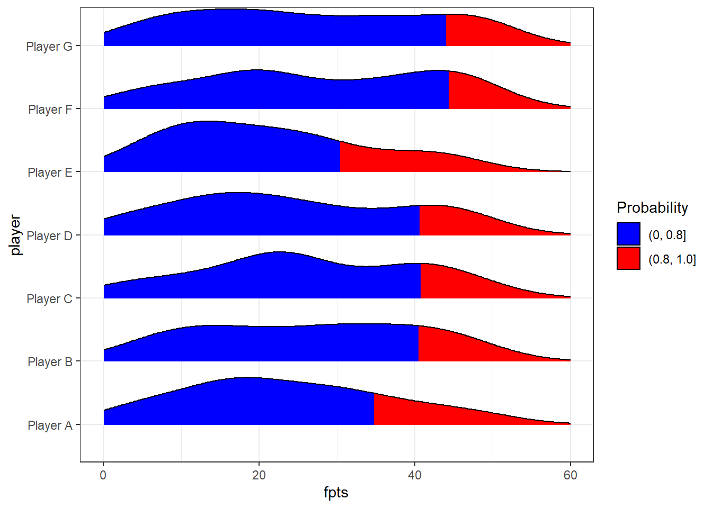
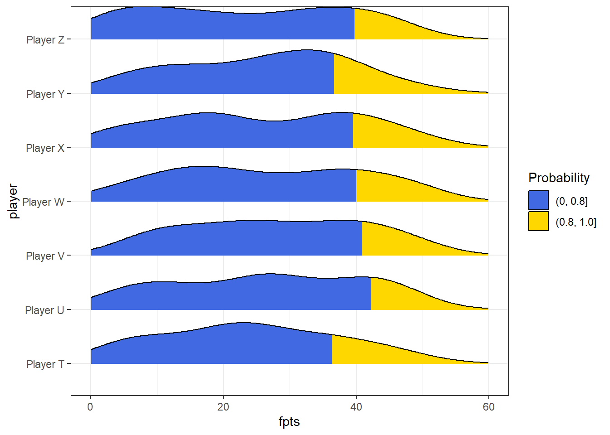
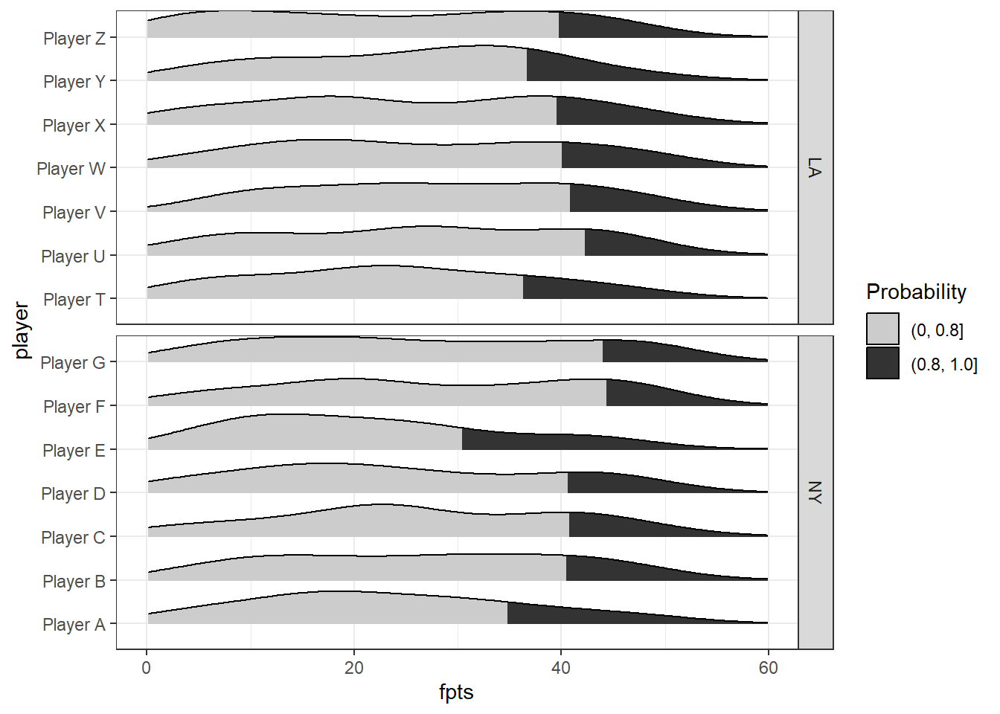

# renv::restore()Example of Faceted KDP by Player for Each Team with Consistent X-axes Across Figures
Install Packages (if needed)
This example uses tibble, dplyr, ggplot2 and a couple other tidyverse packages. It also uses the ggridges package that extends ggplot2. If you have never installed the tidyverse, uncomment and run the next cell. Else continue to the next section.
Setup Environment
This line imports the packages you’ll need later.
library(tibble)
library(dplyr)
Attaching package: 'dplyr'The following objects are masked from 'package:stats':
filter, lagThe following objects are masked from 'package:base':
intersect, setdiff, setequal, unionlibrary(stringr)
library(ggplot2)
library(ggridges)Simulate Data
Here we simulate three seasons of fantasy points (fpts) for seven skill position players from each of three teams. I use 17-game seasons here for simplicity. Tried to do this in the style of what you might get from a package like nflfastr or ffscrapr. You can change the value of fpts_max to any number, it will be used to simulate player fantasy scores later in this block.
# change to adjust the maximum possible fantasy point value
fpts_max <- 50
df <- tibble::tibble(
# create list of player names
player = rep(c(
stringr::str_c("Player", " ", LETTERS[1:7]),
stringr::str_c("Player", " ", LETTERS[20:26])
), 3 * 17),
# Assign Players A:G to NY and T:Z to LA
team = rep(c(rep("NY", 7), rep("LA", 7)), 3 * 17),
# years 2020 to 2022
year = c(rep(2020, 14 * 17), rep(2021, 14 * 17), rep(2022, 14 * 17)),
# weeks 1 to 17 for each year, all the repetition and sorting is needed to make sure each player has the right set of week*year combinations
week = c(rep(sort(rep(
1:17, 14
)), 3)),
# used the simple assumption of a uniform distribution
# rounded to two decimal places
fpts = round(runif(14*3*17, min = 1, max = fpts_max), digits = 2
))Plot Data - Method 1
Here, we get the maximum fantasy points in the df, and then pass it as the max value plus a small margin in xlim(0, max + x) . The ggridges package displays player names on the y-axis, and we visualize each team in separate plots.
fpts_actual_max <- max(df$fpts)
# NY plot
df %>% dplyr::filter(team == "NY") %>%
ggplot2::ggplot(., aes(x = fpts, y = player, fill = factor(ggplot2::after_stat(quantile)))) +
ggridges::stat_density_ridges(
geom = "density_ridges_gradient",
calc_ecdf = TRUE,
quantiles = 0.8,
scale = 0.8) +
ggplot2::scale_fill_manual(name = "Probability", values = c("blue", "red"), labels = c("(0, 0.8]", "(0.8, 1.0]")) +
# xlim controls the max on your axis for both plots since it uses the same constant in both calls
ggplot2::xlim(0, fpts_actual_max + 10) +
ggplot2::theme_bw()Picking joint bandwidth of 5.66
# LA plot
df %>% dplyr::filter(team == "LA") %>%
ggplot2::ggplot(., aes(x = fpts, y = player, fill = factor(ggplot2::after_stat(quantile)))) +
ggridges::stat_density_ridges(
geom = "density_ridges_gradient",
calc_ecdf = TRUE,
quantiles = 0.8,
scale = 0.8) +
ggplot2::scale_fill_manual(name = "Probability", values = c("royalblue", "gold"), labels = c("(0, 0.8]", "(0.8, 1.0]")) +
# xlim controls the max on your axis for both plots since it uses the same constant in both calls
ggplot2::xlim(0, fpts_actual_max + 10) +
ggplot2::theme_bw()Picking joint bandwidth of 5.63
Plot Data - Method 2
Here we use ggplot2’s faceting feature, but otherwise set up the limits etc. the same way. I couldn’t quite figure out how to differentially colorize the fill for each team here, so I use grayscale.
fpts_actual_max <- max(df$fpts)
# plot the figure
df %>%
ggplot2::ggplot(., aes(x = fpts, y = player, fill = factor(ggplot2::after_stat(quantile)))) +
ggridges::stat_density_ridges(
geom = "density_ridges_gradient",
calc_ecdf = TRUE,
quantiles = 0.8,
scale = 0.8) +
ggplot2::scale_fill_manual(name = "Probability",
values = c("grey80", "grey20"), labels = c("(0, 0.8]", "(0.8, 1.0]")) +
# xlim controls the max on your axis for both plots since it uses the same constant in both calls
ggplot2::xlim(0, fpts_actual_max + 10) +
ggplot2::facet_grid(rows = vars(team), scales = "free_y") +
ggplot2::theme_bw()Picking joint bandwidth of 5.63Picking joint bandwidth of 5.66